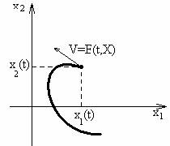
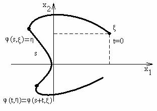
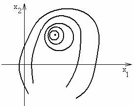

\(\textbf{Понятие динамической системы.}\)
\[\begin{equation}\label{1} \dot{X}=F(t,X),\quad t\in R, \tag{1} \end{equation}\] где \[X=(x_{1},x_{2},\dots ,x_{n})\in R^{n},\quad \dot{X}=(\dot{x_1},\dot{x_2},\dots,\dot{x_n}),\] \[F(t,X)=(f_{1}(t,X),f_{2}(t,X),\dots,f_{n}(t,X)),\] \(t\) - независимая переменная, которая трактуется как время.
\[X=X(t)=(x_{1}(t),x_{2}(t),\dots ,x_{n}(t))\] - решение системы (\ref{1}) трактуется как закон движения точки с координатами \((x_{1}(t),x_{2}(t),\dots,x_{n}(t))\) в пространстве \(R^{n}\) в моменты \(t\).
Если в каждой точке существует и единственно решение системы (\ref{1}), то в каждой точке пространства \(R^{n}\) определена скорость движения.
\( \underline{Фазовое\;пространство}\) - это область, в которой живёт \(X \in R^{n}\).
\(X=(x_{1},x_{2},\dots ,x_{n})\) - \(\underline{фазовый\;вектор\;системы}\).

Cистема (\ref{1}) называется \(\underline{динамической\;системой}\). В фазовом пространстве рисуется \(\underline{траектория\;динамической\;системы}\). Если для всех решений системы (\ref{1}) нарисовать траектории динамической системы, то получим \(\underline{фазовый\;портрет\;динамической\;системы}\).
\(\underline{\textbf{Точка покоя динамической системы.}}\)
\(\underline{ Опр.}\) Точка \(X^{0}=(x_{1}^{0},x_{2}^{0},\dots,x_{n}^{0})\) называется \(\underline{точкой\;покоя}\) (равновесия) динамической системы (\ref{1}), если для любых \(t\) выполняется: \(F(t,X^{0})\equiv 0.\)
Если \(X^{0}\) - точка покоя динамической системы (\ref{1}), то \(X(t)\equiv X^0\) - решение системы (\ref{1}).
\(\textbf{Автономные динамические системы.}\)
\(\underline{\textbf{Автономной}}\) называется система \[\begin{equation}\label{2} \dot{X}=F(X),\quad t\in R\quad X \in R^{n} \tag{2} \end{equation}\]
Далее будем предполагать, что \(F(X)\) непрерывно дифференцируема по совокупности всех переменных, тогда для любых \(t\) существует и единственно решение задачи Коши.
Пусть \(X=\varphi(t)\) - решение автономной динамической системы (\ref{2}).
Рассмотрим \(X=\psi(t)=\varphi(t+C),\) \(C\)- фиксированное из \(R\). \[\dot{\psi}(t)=\frac{d\psi(t)}{dt}=\frac{d\varphi(t+C)}{d(t+C)}=\dot{X}(t+C)=F(\varphi(t+C))=F(\psi(t)).\] Следовательно, \(\psi(t)=\varphi(t+C)\) - также решение (\ref{2}).
Обозначим \(X=\varphi(t,\xi)\) - решение системы (\ref{2}), которое удовлетворяет начальному условию \[\varphi(0,\xi)=\xi.\] Здесь \(\xi\) - произвольная точка фазового пространства \(\Gamma\in R^n,\) где выполняются условия теоремы Коши.
1. Если \(\xi \) фиксировано, а \(t\) меняется, то \(X(t)=\varphi(t,\xi)\) определяет траекторию системы, исходящую из точки \(\xi\).
2. Если \(t\) фиксировано, а \(\xi\) меняется, то функция \(\varphi(t,\xi)\) определяет преобразование фазового пространства (области из \(R^{n}\)) в себя; правило этого преобразования: \[\xi \in R^{n}\rightarrow \varphi(t,\xi)\in R^{n}\] - точка, в которую перешла бы точка \(\xi\) по траектории этой системы через время \(t\).
Зафиксируем время \(s\); точка двигалась время \(s,\) \[\eta =\varphi(s,\xi);\] далее \(\eta\) берём за начальную точку. Пусть прошло время \(t,\) тогда

Т.к. \(X(t)=\varphi(t,\xi)\) - решение (\ref{2}), то \(X(t)=\varphi(t+s,\xi)\) - тоже решение (\ref{2}).
Рассмотрим два решения (\ref{2}) \(X(t)=\varphi(t,\xi)\) и \(X(t)=\varphi(t+s,\xi).\) Имеем при \(t=0\) \[X(0)=\varphi(0,\eta)= \eta\] \[X(0)=\varphi(0+s,\xi)=\varphi(s,\xi)=\eta\] Эти два решения исходят из одной точки и в силу теоремы Коши совпадают для любых \(t.\)
Следовательно, точка движется по одной траектории, в независимости от выбора начальной точки.
Для любых фиксированных, но произвольных \(\xi\), \(t\), \(s\) \[\varphi(t+s,\xi)=\varphi(t,\eta)=\varphi(t,\varphi(s,\xi))\]
Получаем \[\varphi(t+s,\xi)=\varphi(t,\varphi(s,\xi))\] - групповое свойство автономных динамических систем.
\(\underline{Если\;система\;не\;является\;автономной}\), то из того, что \(\varphi(t,\xi)\) - решение системы, не следует, что \(\varphi(t+s,\xi)\) - также решение этой системы, т.е. инвариантности относительно сдвижек пространства.
\(\underline{В\;автономных\;системах}\) в каждой точке фазового пространства скорость в этой точке не зависит от времени, что неверно для динамических систем в целом.
Пусть \(t\) фиксировано (\(\xi\in \Gamma\) произвольно); \(\varphi(t,\xi):R^{n}\rightarrow R^{n}\).
Перебирая все фиксированные \(t,\) получим множество преобразований \(\{\varphi(t,\xi)\}_{t}.\)
Можно ввести \(\textbf{операцию умножения}\) как последовательное действие операций, тогда относительно этой операции множество преобразований \(\{\varphi(t,\xi)\}_{t}.\) является группой: \[\varphi(t+s,\xi)= \varphi(t,\varphi(s,\xi)) - обеспечивает\;ассоциативность;\] \[\varphi(0,\xi)=\xi - нейтральный\;элемент;\] \[\varphi(t,\xi)\;и\;\varphi(-t,\xi)\;являются\;обратными\;элементами.\]
\(\textbf{Свойства и виды траекторий автономных систем.}\)
Траектории автономной системы либо совпадают, либо не пересекаются.
От противного: траектории не совпадают, но пересекаются, т.е. существуют \(\xi_{1}\neq\xi_{2},\) \(t_{1},t_{2},\) такие что \[\varphi(t_{1},\xi_{1}) = \varphi(t_{2},\xi_{2}),\] тогда для любого момента \(t\) справедливо \[\varphi(t,\varphi(t_{1},\xi_{1})) = \varphi(t,\varphi(t_{2},\xi_{2})).\] Согласно групповому свойству \[\varphi (t+t_{1},\xi_{1}) = \varphi(t+t_{2},\xi_{2}),\] т.е. траектории пересекаются во всех точках. Получено противоречие.
\(\textbf{Утверждение доказано.}\)
\(\textbf{Траектории автономных систем.}\)
\(\underline{\textbf{Точки покоя}}\) \[\xi\in R^{n}\;такая,\;что\;для\;любого\;t\;\varphi(t,\xi)=\xi.\]
\(\underline{\textbf{Траектория без самопересечения}}\) \[Для\;любых\;t_{1}\neq t_{2 }\;следует\;\varphi(t_{1},\xi)\neq\varphi(t_{2},\xi).\]
\(\underline{\textbf{Замкнутые траектории(циклы)}}\) Существуют \(t_{1}\neq t_{2}\neq t_{3}\) такие, что \[\varphi(t_{1},\xi)=\varphi(t_{2},\xi)\neq\varphi(t_{3},\xi).\]
\(\underline{Период.}\) Обозначим период через \(T.\) Пусть \(t_{1}\)<\(t_{2},\) \(T= t_{2}-t_{1}\). Тогда \[\varphi(t_{1},\xi)= \varphi(t_{2},\xi)=\varphi(t_{1}+T,\xi).\]
Следовательно, для любых \(t\) \[\varphi(t,\xi)=\varphi(t-t_{1}+t_{1},\xi)=\varphi(t-t_{1},\varphi(t_{1},\xi))=\] \[=\varphi(t-t_{1}, \varphi(t_{1}+T,\xi))=\varphi(t-t_{1}+t_{1}+T,\xi)=\varphi(t+T,\xi).\] Итак, для любых \(t\) имеем \(\varphi(t,\xi)=\varphi(t+T,\xi),\) значит существуют периодические решения автономной системы.
\(\underline{\textbf{Фазовый портрет автономной динамической системы}}\)
Фазовый портрет автономной динамической системы может иметь следующий вид:
